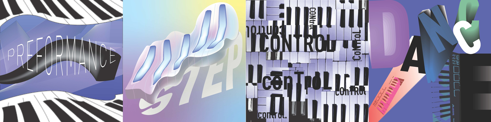
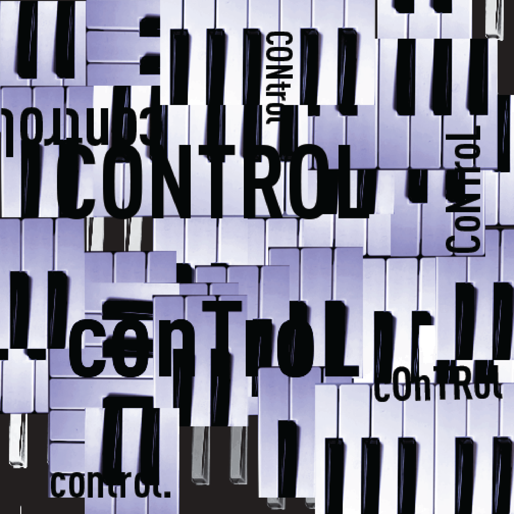
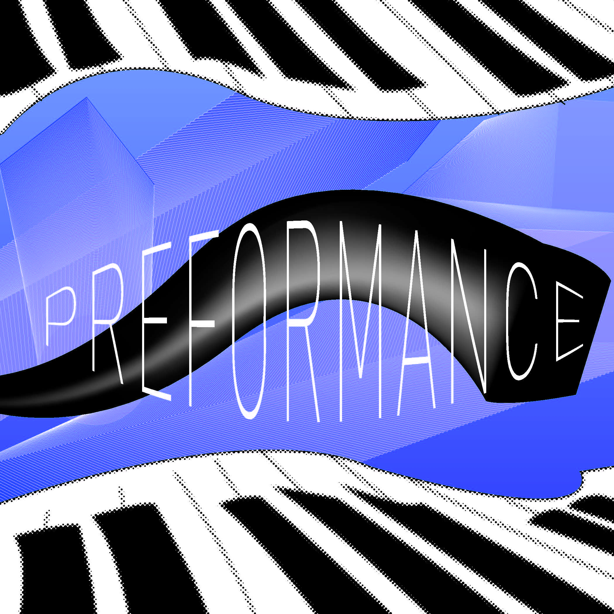
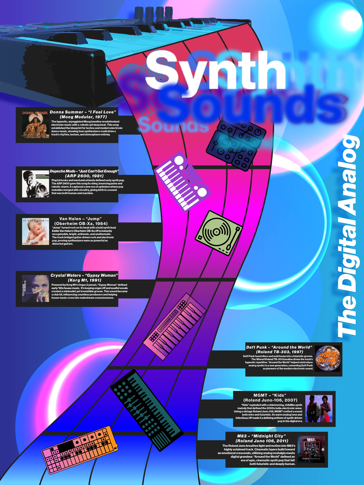

Exploring Synth
A semester long exploration into Synth technology

a look into the process




Project Elements
About the Project
Exploring Synth represents a semester-long deep dive into synthesizer technology and its profound impact on art, music, and interactive design. This project bridges the gap between electronic music production and game design, culminating in a fully-engineered board game that brings synth concepts to life.
Through extensive research into analog and digital synthesis, modular systems, and sound design principles, this project explores how musical technology can inspire tactile, strategic gameplay. The board game mechanics directly reflect synthesizer concepts like oscillators, filters, envelopes, and modulation.
The design process involved prototyping game components, testing gameplay mechanics with musicians and designers, and creating a visual identity that honors the aesthetic of classic synthesizer interfaces. The result is an educational yet entertaining experience that makes synthesis accessible to all audiences.
Key achievements include developing an intuitive rule system, designing custom game pieces inspired by synth modules, and creating companion materials that teach both game strategy and fundamental synthesis concepts.
Research & Development
From initial sketches to physical prototypes, the iterative design process brought the SYNC board game from concept to reality through hands-on craftsmanship and careful material selection.
Initial Sketching
Hand-drawn prototypes on wood exploring circular patterns and modular layouts inspired by synth interfaces.
Material Testing
Experimenting with wood, foam, and textured materials to create tactile game components.
Prototype Iteration
Multiple design iterations exploring component layouts, button patterns, and visual hierarchy.